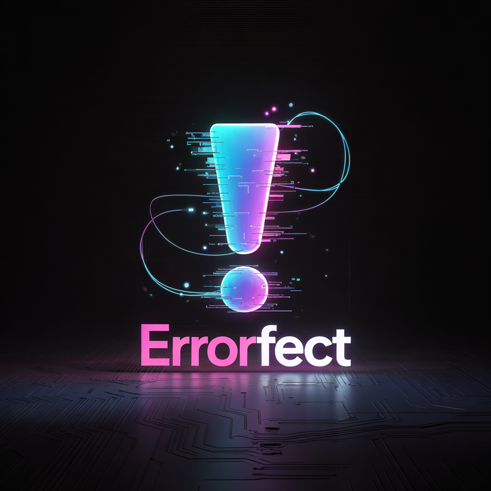

Visual Evidence

The glitching isn’t aesthetic — it’s prediction failing; the mechanism becomes visible.

The burning masks: removing social wearability reveals the operator underneath.
We use words like perfect, normal, and control as if they describe reality. They often don’t. They behave more like cognitive operators: they compress ambiguity, create ranking, and assign blame without announcing they’ve done it.
Errorfect doesn’t claim hidden etymology; it induces a breakpoint. The disruption makes your internal associations visible — personal, cultural, institutional, or just noise. Visibility is the prerequisite for choice.
Errorfect runs as a sequential disruption protocol. Start at A. If A returns a useful revelation, stop. If not, escalate to B; then C; then D. Escalation is not “more correct” — it’s simply more invasive.
Orthographic disruption; interrupts automatic lexical chunking.
Stop if the reveal exposes a hidden standard, sorting rule, threat coding, identity fusion, or an unstated metric.
Phonological disruption; re-parses sound and emphasis, often surfacing a different association layer than A.
Stop if meaning stabilizes into a mechanism, not just a clever fragment.
Onset-level disruption; interferes earlier in recognition, before the word fully “lands.”
Use when A and B produce only noise or coincidence.
Morphological disruption; removes semantic operators (negation, intensifiers, directionality) that preload interpretation.
Only valid when the prefix is real and the base form meaningfully changes the claim.
A multilingual note: the probe is not constrained to one language. Cross-language associations can amplify a reveal — and they can also create false positives. If a fragment “works” only because you know another language, label it as an associative amplification and verify whether the mechanism exists in the original context.
Errorfect is a language-based intervention: not a diagnosis tool, not a moral philosophy. It’s a repeatable method for metacognitive defusion — separating you from the spell a word is casting so you can decide what you actually mean.
Clinically adjacent terms (used here in standard meanings): cognitive reframing (CBT), cognitive defusion (ACT), externalization (narrative therapy), shame resilience, and locus-of-control calibration.
Clean caution: this is not a substitute for professional care when someone is in crisis, dissociation, or severe mood instability. Used responsibly, it’s a precision tool for day-to-day cognition: defusing loaded language, reducing shame fuel, restoring choice at the exact moment a word tries to seize the steering wheel.

When someone says “perfection is here,” they may be activating an error-generating machine. The packaging can be spiritual, corporate, parental, romantic — the machinery stays the same: a hidden metric that produces inadequacy.
These words function like incantations because we don’t see the mechanism. Errorfect is the interruption that makes it visible.
This isn’t about “using the words incorrectly.” Often the word is the incorrectness: a mechanism pretending to be a description.
Once you understand the mechanism, you can use it in reverse.
Instead of stripping masks to reveal harm, you can build names whose surface and substrate agree — where removing the mask doesn’t expose shame; it exposes the same intent, more plainly.
Axel works whether you say it or strip it — you get “excel” either way. The first letter becomes cosmetic, not camouflage; excellence remains.
Twin → win: doubling collapses into victory — repetition becomes outcome.
Aworth → worth: the substrate is not damage; it’s intrinsic.
This is the surgery in reverse: building language where the hidden layer reinforces life instead of undermining it.